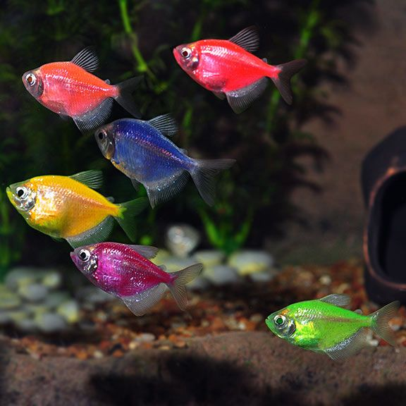
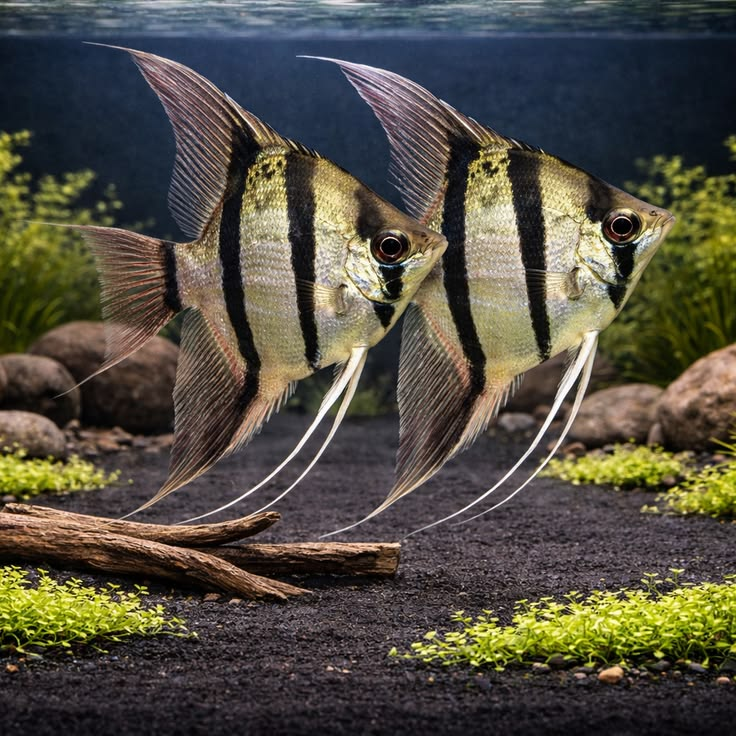
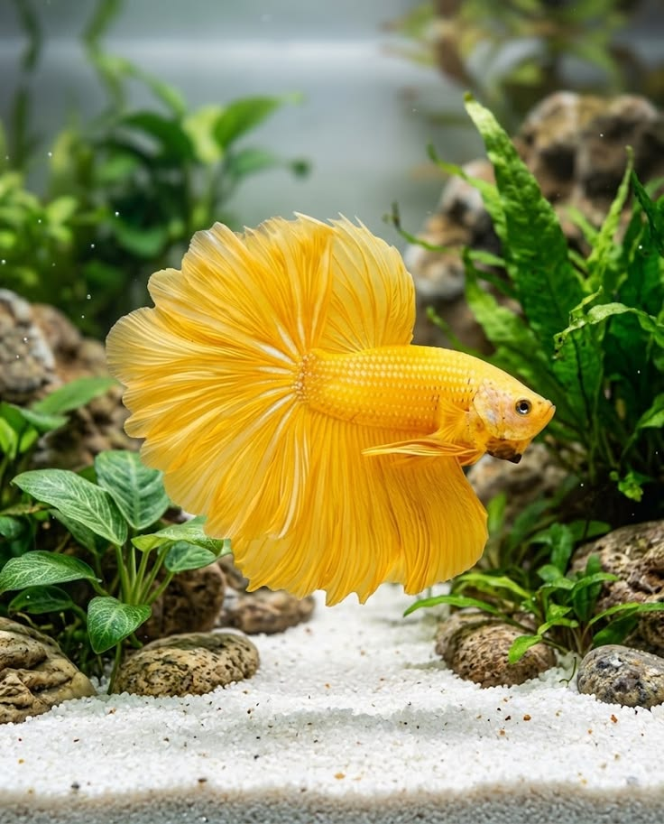

Tetre
Šarene tetre privlače pažnju svojim jarkim bojama i živahnim plivanjem. Društvene su i najbolje se osećaju u jatu. Potreban im je akvarijum sa dovoljno prostora za plivanje, zaklonima i stabilnim uslovima vode.
UPOZNAJ NJIHOV MALI SVET
Dobar akvarijum počinje razumevanjem potreba njegovih stanovnika.
Akvarijum postavi na stabilno postolje, dalje od direktnog sunca i izvora toplote. Ostavi dovoljno prostora za hranjenje i održavanje.
Voda se priprema i biološki sazreva pre dodavanja ribica. Njenu spremnost proveri testovima, a ne samo po izgledu i broju proteklih dana.
TRI RAZLIČITA KARAKTERA

Šarene tetre privlače pažnju svojim jarkim bojama i živahnim plivanjem. Društvene su i najbolje se osećaju u jatu. Potreban im je akvarijum sa dovoljno prostora za plivanje, zaklonima i stabilnim uslovima vode.

Skalari su slatkovodne ribe prepoznatljive po visokom, bočno spljoštenom telu i dugim perajima. Potreban im je prostran i dovoljno visok akvarijum sa biljkama i prostorom za plivanje.

Upečatljiva riba sa dugim perajima. Mužjaci se ne drže zajedno. Potrebni su odgovarajući prostor, filtracija i blago strujanje vode.
Proveravaj rad filtera i temperaturu. Hrani umereno, prati rezultate testova vode i obavljaj delimične zamene prema potrebama akvarijuma. Pre izbora riba proveri zahteve svake vrste.